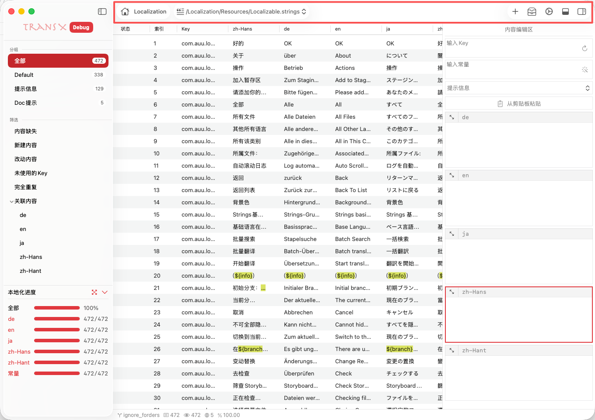
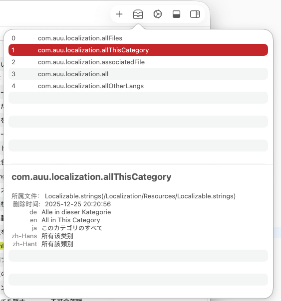

导航区

导航区位于主窗口顶部，是 TransX
的核心操作控制中心。该区域集成了项目信息展示、文件切换、快捷操作等关键功能，为用户提供了便捷的工作流控制入口。
Home 按钮
功能概述
Home
按钮位于导航区左侧，显示当前正在编辑的项目名称，作为项目标识和快速访问入口。
显示内容
- 项目名称：显示当前 Xcode 项目的名称
- 可视化标识：使用 🏠 图标增强识别度
- 状态指示：通过颜色或图标变化表示项目状态（已保存/未保存/同步中）
交互功能
点击跳转：
- 点击 Home 按钮
- 系统会在 Finder 中打开当前项目的根目录
- 可以快速访问项目的其他文件和资源
使用场景：
- 多项目开发：在同时维护多个 Xcode
项目时，通过项目名称快速识别当前工作环境
- 文件管理：需要访问项目的其他配置文件或资源文件
- 目录导航：快速定位项目在文件系统中的位置
- 版本控制：通过 Finder 访问
.git
目录进行版本管理操作
最佳实践：
- 为不同项目设置清晰的命名，避免混淆
- 定期检查项目路径是否正确，特别是在移动项目文件后
- 可以通过 Finder 中的项目目录快速执行终端命令
文件切换
功能概述
文件切换功能允许在同一项目的多个 .strings
文件之间快速切换，无需关闭和重新打开文件。在大型 iOS/macOS
项目中，通常会有多个本地化文件分别管理不同模块的多语言内容。
使用场景
典型项目结构：
MyApp.xcodeproj/
├── Localizable.strings # 主应用文案
├── InfoPlist.strings # 系统权限说明
├── ErrorMessages.strings # 错误信息
├── UILabels.strings # UI 标签文本
└── Marketing.strings # 营销推广文案
为什么需要多个 .strings 文件：
- 模块化管理：不同功能模块独立维护，降低耦合度
- 团队协作：不同团队成员负责不同文件，减少合并冲突
- 按需加载：在 App
运行时可以选择性加载需要的本地化资源
- 版本控制：独立文件便于追踪特定模块的文案变更历史
操作方式
下拉列表切换：
- 点击导航区中部的文件名下拉按钮
- 展开显示项目中所有可用的
.strings 文件列表
- 选择目标文件，整个工作区内容立即切换
- 快捷键：
⌘ + D 快速切换strings文件
文件信息显示：
切换影响范围
当切换文件后，以下区域的内容会同步更新：
控制区：
- 分组列表会更新为当前文件的分组结构
- 筛选条件会重新应用到新文件
- 本地化进度显示新文件的翻译状态
内容区：
- 显示新文件的所有文案条目
- 列表状态（排序、筛选）会保持
- 选中状态会被清除
编辑区：
日志区：
功能区
概述
功能区集成了主窗口的核心操作按钮，提供快速访问常用功能的入口。所有按钮都配备了
Tooltip 提示和快捷键支持。
1. 新建按钮
功能说明：
用于创建新的多语言文案条目，是添加本地化内容的主要入口。
操作流程：
- 点击 ➕ 新建按钮
- 编辑区从右侧滑入并展开
- 系统会自动聚焦到 Key 输入框
- 填写完整的文案信息后保存
快捷键：
⌘ + N：新建文案条目⌘ + Return：保存并继续新建下一条
智能辅助：
- 粘贴板识别：如果检测到粘贴板中有格式化的多语言内容，会自动解析并填充
- Key 生成：提供随机 Key
生成功能，符合项目配置的命名规范
- 常量转换：自动将 Key 转换为对应的常量名（如
login.button.submit →
LOGIN_BUTTON_SUBMIT）
- 分组推荐：基于 Key
的前缀或历史记录推荐合适的分组
2. 回收区

功能说明：
回收区是一个临时存储空间，用于缓存在当前编辑会话中删除的所有文案条目，提供"后悔药"机制，防止误删除操作。
工作机制：
- 会话级缓存：仅保存当前打开项目后删除的条目
- 持久化存储：关闭应用前会询问是否永久删除回收区内容
查看内容：
点击回收站图标，打开回收区面板，显示：
- 删除的文案 Key
- 删除时间
- 原分组信息
- 所有语言的内容预览
操作选项：
恢复：
- 单条恢复：右键选择"恢复"，文案会回到原分组
- 批量恢复：选中多条后批量恢复
永久删除：
导出：
- 导出为 CSV 格式，便于存档
- 可以选择导出部分或全部删除记录
- 导出文件可以在其他项目中导入
使用场景：
- 误删恢复：不小心删除重要文案时快速恢复
- 批量操作回滚：批量删除后发现操作失误，整体恢复
- 文案迁移：从一个项目删除并导出，然后在另一个项目导入
最佳实践：
- 在执行大规模删除前，先导出当前状态作为备份
- 定期检查回收区，确认不需要的内容后清空
- 重要文案删除前，先导出到外部文件
- 使用版本控制系统（Git）作为更可靠的回退机制
3. 设置按钮
功能说明：
打开项目设置面板，配置当前项目的本地化相关参数和工作流选项。
使用场景：
- 新项目初始化时配置基本参数
- 添加新语言支持时更新语言列表
- 调整 Key 命名规范以适应团队标准
- 配置自动化翻译服务
- 等
4. 折叠按钮
功能说明：
提供界面布局的灵活控制，通过折叠不常用的区域来最大化主要工作空间。
折叠区域：
日志区折叠：
- 位置：窗口底部
- 快捷键：
⌘ + \
- 效果：隐藏日志输出区域，为内容区提供更多垂直空间
- 状态保持：折叠状态会在下次启动时恢复
编辑区折叠：
- 位置：窗口右侧
- 快捷键：
⌘ + ]
- 效果：隐藏编辑面板，专注于浏览和筛选文案
- 自动折叠：当没有编辑任务时自动收起
使用场景：
- 专注浏览：折叠编辑区和日志区，全屏查看文案列表
- 小屏幕优化：在笔记本电脑上工作时，最大化内容显示空间
- 演示模式：向团队展示文案时，隐藏不必要的UI元素
- 调试模式：展开日志区查看详细的操作日志
布局预设：
- 浏览模式：内容区最大化
- 编辑模式：编辑区和内容区并列显示
- 调试模式：日志区展开，其他区域缩小
- 全屏模式：所有辅助区域折叠